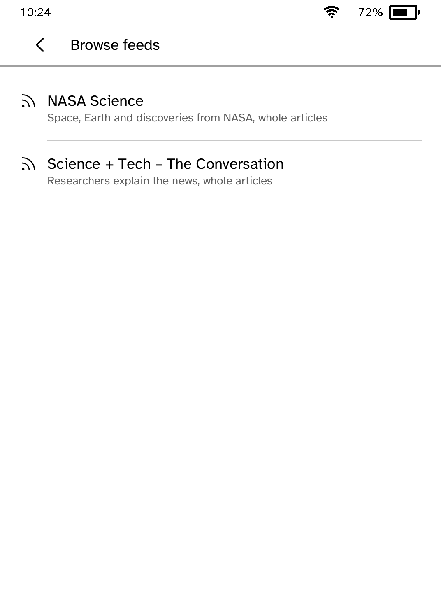
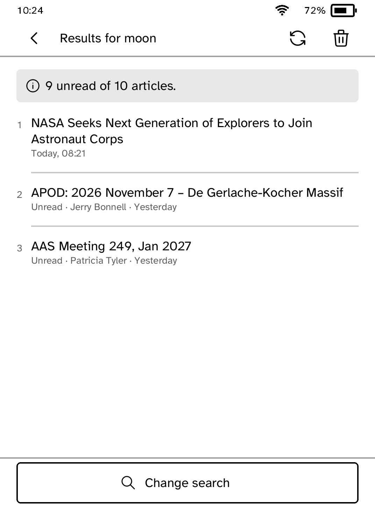
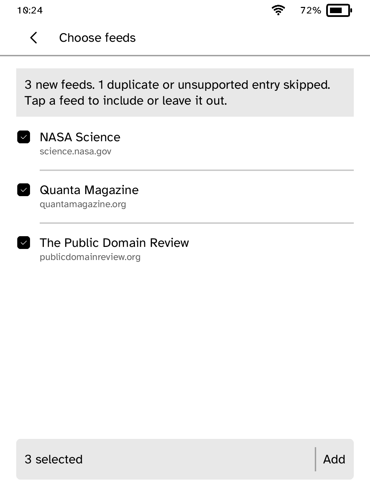

Feeds
Follow feeds, search saved articles and read offline with images.
- Version
- 1.0.20
- Needs
- Cobalt 0.3.34 or newer
- May use
- The network





Before you install
- Nothing is needed on a computer to follow feeds: add them on the reader. These steps bring a subscription list over from another feed reader.
- Set up the reader once over USB, if you have not already.
kobo setup - Export your subscriptions from the other feed reader as an OPML file, and check it.
kobo feeds check subscriptions.opml - Send the file to the reader. Then open Feeds and choose Import OPML.
kobo feeds push subscriptions.opml
Commands need the kobo command on macOS, Linux or Windows WSL. This installs it ready-built, without touching the reader:
curl -fsSL https://bandarlabs.github.io/Cobalt/install.sh | sh -s -- --no-setup
New to Cobalt? Install it from your browser.
Plug your Kobo into this computer and install Cobalt in about a minute. After that, apps install over Wi-Fi.
Works in Chrome, Edge and Opera. Check your Kobo is supported.
Already have Cobalt? Link your Kobo.
On your Kobo, open App Store and tap Link a browser in the top bar, then Link a browser again. Scan the QR code, or enter the pairing code and verification key it shows.
Install on your Kobo
Your Kobo checks the app's signature before installing it.
New in 1.0.20
Dates now read the way you would say them. Feeds from an imported OPML file are fetched straight away, a feed offered twice is listed once, and a search with no results says so plainly.
Want another Kobo app? Request it, suggest a feature or report a bug in r/CobaltForKobo.